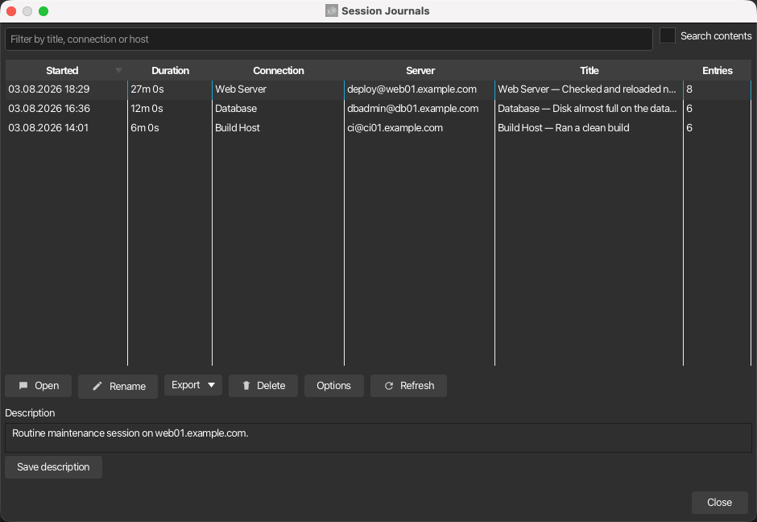

Session journal¶
The session journal documents a terminal session as a readable timeline: every server output line and every command you type is written to a capture log, an AI periodically condenses the activity into short journal entries, and the result is rendered as a self-contained HTML page with connection details, color-coded excerpts, screenshots and your own notes. Journals are managed like saved chats — in their own manager window with search, editing and export.

Storage and formats¶
Each journal is one self-contained directory under ~/.kortty/journals (configurable in Settings > Logging > Session Journal):
| File | Purpose |
|---|---|
journal.xml |
The curated journal document: metadata, AI summaries, markers, notes, screenshot references |
session-log.json / .xml / .yaml |
The append-only capture log — timestamped server output and typed input lines with sequence ids |
session-log-2.json.gz, … |
Rotated log parts; closed parts are gzip-compressed automatically, the journal never deletes history |
journal.html |
The generated timeline page, regenerated automatically after every change |
screenshots/*.png |
Screenshots you attached during the session |
The capture-log format is selectable in the journal manager's Options dialog: JSON (JSON Lines, the default), XML or YAML. All formats carry the same fields, and every entry is exactly one line, so a crash never corrupts more than the last line. JSON is the default because it is the smallest of the three once a finished part is compressed, and because log tooling reads it without needing a parser of its own; XML is a few percent smaller uncompressed, and YAML is the largest, since it writes JSON mappings with a - prefix. The active log part stays uncompressed for live reads; rotation (default 25 MB per part) and session end compress finished parts to .gz.
Enabling the journal¶
Automatically for a connection¶
- Open Connections > Manage Connections and edit a connection
- On the Journal tab, enable Enable session journal for this connection
- Optionally adjust Capture typed input lines, Generate AI summaries and the per-connection Summary interval
Every future connection of this server then starts its journal automatically. The journal survives reconnects — one journal per tab lifetime, with a reconnect marker in the log.
Retroactively for a running session¶
Use Tools > Start/Stop Session Journal (Ctrl+Alt+T), the tab context menu (Session Journal > Start journal) or the journal bar's Start journal button. The existing scrollback is imported into the journal as seed entries first, so the timeline covers what already happened, then live capture attaches.
The journal bar¶
While a journal is available, a bar below the terminal shows its state (Journal active since HH:MM) and offers Stop journal, Screenshot and Note:
- Screenshot (Ctrl+Alt+C, also in the terminal's right-click menu) snapshots the terminal — in a split layout, the right-click menu captures exactly the pane under the cursor — and files it into the journal timeline.
- Note opens a small input for a free-text remark that appears as its own timeline entry at the current position.
AI summaries¶
While the journal runs, the AI summarizer periodically reads the newest capture-log lines and appends a compact journal entry (title, summary and a suggested marker: info, important or error). Defaults and limits:
| Option | Where | Default |
|---|---|---|
| Summary interval | Settings > Logging > Session Journal (global) or per connection | 5 minutes |
| Max. terminal lines per AI evaluation | Journal manager Options | 100 |
| Token budget for context fill | Journal manager Options, visible when max lines is 0 | 130000 |
| Split backlog into multiple prompts (chunking) | Journal manager Options | off |
| AI profile for summaries | Journal manager Options or Settings > Logging > Session Journal | Default profile |
Summaries use your default AI profile unless you pick a dedicated journal profile. That choice is available in three equivalent places: the journal manager's Options dialog, Settings > Logging > Session Journal, and AI > AI Manager > Local AI next to the Text and Coding roles. The Text/Coding role profiles themselves are deliberately not used for the journal.
Setting max lines to 0 switches to context filling: the summarizer packs as many of the newest lines as fit into the configured token budget. With chunking enabled the whole backlog is processed instead of only the newest window — consecutive windows of the configured size, one AI prompt each.
Warning
Chunking can take very long on large sessions and is not recommended for everyday use — it is intended for power users with capable hardware and a powerful LLM.
When the session ends, the summarizer writes a closing session summary entry (what was accomplished, which errors occurred). Optionally — Let the AI title the journal when the session ends in the Options dialog — a final AI call names the journal, unless you renamed it manually.
Note
The journal works without AI: if no AI profile is available, AI features are disabled, or summaries are switched off, the timeline records raw activity entries instead. AI summary prompts never use internet-access tools; the terminal excerpt goes only to the configured AI profile.
Password protection¶
Typed input is captured only as complete submitted lines, and several layers keep passwords out of the journal:
- When the server output ends in a password prompt (
password:,[sudo] password for …,passphrase,PIN, and localized variants), the next submitted input line is suppressed and logged as a redacted placeholder — the typed text is never buffered or written. - The connection's own stored password is additionally replaced by
***wherever it would appear in captured text. - Capture typed input lines can be disabled per connection entirely; commands then only appear as the server's echo in the output stream.
Warning
The prompt detection is a heuristic — a remote terminal cannot reliably know when the server disabled echo. Exotic or full-screen password prompts may not be recognized, and secrets pasted into visible commands (other than the connection's own credentials) are captured like any other text. Treat journals of sensitive sessions accordingly.
If something slipped through anyway, the viewer's search and replace removes it from the entries and the capture log after the fact. Administrators can also have korTTY redact patterns automatically — see Enterprise policy below.
The journal page¶
journal.html is fully self-contained (no external resources) and works in the built-in viewer, in any browser, and inside the exported bundle:
- A sticky header shows who was connected to which server, start time, duration, and counts for entries, commands, errors and screenshots, plus the journal description. Live journals show a live badge. The line below the title only carries what the title does not already say, so a journal named after its endpoint states the connection once instead of three times.
- The timeline groups entries by day; each entry carries its time, a colored marker dot/badge (red = error, amber = important, blue = info), the AI title and summary, and color-coded input (green) and output (blue) excerpts.
- Clicking an entry slides a log panel in from the bottom with the exact capture-log range behind that entry. The panel has its own scrollbar, a search field with a match counter and ▲/▼ navigation (Enter / Shift+Enter also cycle matches, Esc closes), and colors input and output lines differently.
- Screenshot entries show thumbnails; clicking one opens a full-size lightbox.
- The page renders dark by default, follows the system light/dark preference and has its own theme toggle.
- Screenshots, excerpt panels, the timeline column and the log panel size themselves to the window, so the page stays readable in a narrow viewer tab as well as full screen. Long excerpts scroll inside their own box instead of stretching the timeline.
Searching the journal¶
The magnifier in the header opens a search bar directly under the connection details (Ctrl+F works too). Typing a term or a whole sentence highlights every occurrence across the timeline — entry titles, AI summaries, input and output excerpts, notes and timestamps — and shows a match counter; ▲ and ▼ or Enter / Shift+Enter jump between the hits, Esc or ✕ closes the bar and clears the highlighting.
Note
This searches the journal entries. The raw capture log has its own search inside the log panel, and the journal manager can search across all journals with Search contents.
Copying content¶
Every entry carries a copy button in its top-right corner: text entries copy the whole entry, screenshot entries copy the image. The log panel has the same button for the log section it currently shows.
Right-clicking the page opens a copy menu with more targeted actions, depending on what you clicked:
| Action | Copies |
|---|---|
| Copy selection | The currently selected text (shown whenever a selection exists) |
| Copy summary | The entry's time, title and AI summary |
| Copy entry | The same plus the input/output excerpts and your note |
| Copy screenshot | The screenshot itself, as an image, onto the clipboard |
| Copy screenshot path | The screenshot's path inside the journal folder |
| Copy log section | Every line of the log range currently shown in the panel, with timestamps |
Inside korTTY the copy actions use the app's clipboard, so images land on the system clipboard ready to paste. In an external browser text still copies normally; copying an image may fall back to its path, because browsers block reading local image data from a file:// page.
Font size¶
The A−, A and A+ buttons in the page header scale the whole page between 70 % and 250 %. korTTY remembers the size and applies it to every journal page it renders afterwards, so a page that regenerates (a new AI summary, an edited marker) comes back at the size you chose. Opened standalone in a browser the page remembers the size per browser instead.
Managing journals¶
Tools > Session Journals… (Ctrl+Alt+J) opens the journal manager: all journals in a table sorted by start time (newest first) with duration, connection, server, title and entry count. Running journals are marked and cannot be renamed or deleted while live.

- The filter field matches title, connection, host, user and description; enabling Search contents additionally scans the journal entries and capture logs of every journal in the background.
- Open (or double-click) opens the journal viewer; Rename changes the title; Delete asks for confirmation and then permanently removes the journal folder including the log and all screenshots.
- Several journals can be selected at once (Ctrl / Shift click) to delete or export them in one step. Running journals cannot be renamed or deleted.
- The Description area below the table stores a free-text description per journal; it appears on the journal page and in every export and is included in the content search.
- Options holds the global capture and AI settings described above.
The viewer and editing¶

The viewer shows the journal page in an embedded browser and refreshes automatically while the journal is still being written. Open in browser hands the page to your system browser. Edit splits the view: an entry table next to a form with the entry's Title, Summary, a marker choice (None / Info / Important / Error) and a notes field. Editing lets you correct or categorize entries — flag failures, highlight important findings, or rewrite a summary. Saving regenerates the page at the edited entry's position; a marker you set manually is never overwritten by the AI.
Search and replace¶
Searching finds a term. Search & replace rewrites every occurrence. Use it to erase something that must not stay in the journal — a password pasted into a visible command, a token in a server response — or simply to correct a recurring word.
It is reachable from two places: the Search & replace… button in edit mode, and the Replace… button in the search bar on the journal page, which opens the same dialog with the term you were searching for already filled in. That button only appears inside korTTY — the page is generated from the journal files, so a copy opened in a browser can search but has no way to rewrite anything.
| Option | Effect |
|---|---|
| Search for / Replace with | The text to find and what to put in its place (*** by default) |
| Regular expression | Treats the search text as a regex; $1 in the replacement inserts a captured group |
| Ignore case | Matches every casing |
| Rewrite the capture log as well | On by default. Off changes only the journal entries and leaves the raw log untouched |
| Count matches | A dry run over the real journal: reports how many entry fields and log lines would change, without writing anything |
Replacing covers every entry title, AI summary, note and excerpt, and — unless you turned it off — every capture-log part including the compressed ones. The file header and every untouched line are preserved exactly, so the log keeps its structure.
Warning
Replacing rewrites the journal files in place and cannot be undone. Use Count matches first, especially with a regular expression. Documents you already exported are separate files and are not changed — export them again afterwards. A journal that is still being written cannot be rewritten; stop the session first.
The search text is never written to korTTY's own log, because for a redaction it is the secret.
Deleting an entry¶
Delete entry removes the selected timeline entry after a confirmation, and a screenshot entry's image file with it. It does not touch the capture log — to remove a text from there as well, use Search & replace.
Exporting¶
The Export menu in the manager and the viewer offers three formats:
| Format | Content |
|---|---|
| The simple journal: header with connection details and statistics, day-grouped entries with marker badges, input/output excerpts, notes — and, if selected, downscaled embedded screenshots | |
| Markdown | The same simple journal as a .md file; screenshots are copied into a sibling <name>-files/ folder |
| HTML bundle (complete) | A zip archive of the whole journal — journal.html, journal.xml, the decompressed capture logs and all screenshots — laid out so the page works immediately after unzipping |
PDF and Markdown ask whether screenshots should be included.
Exporting several journals¶
With more than one journal selected, the export writes a single zip archive that keeps each journal separate: one PDF or Markdown document per journal, or one folder per journal for the HTML bundle. Names are taken from the journal titles, with a numeric suffix if two titles collide.
Every archive — including the HTML bundle of a single journal — can be protected with a password. The option sits in the export dialog and encrypts the archive with AES-256; without it the archive is written unencrypted. Journals contain full terminal transcripts, so an unprotected archive is a deliberate choice.
Warning
The password is not stored anywhere. korTTY cannot recover an encrypted archive if you lose it.
Footer and watermark¶
By default every exported document carries a footer stating that it was created with korTTY, with a link to the project repository — at the bottom of each PDF page, at the end of the Markdown file, and in the footer of the journal page inside the HTML bundle. PDFs can additionally carry a diagonal watermark, which is off by default.
Both are configured under Configuration → Global Settings → Export, where you can change the footer text, turn the footer off, enable the watermark and choose its text and colour. The same settings apply to AI chat exports.
Enterprise policy¶
Administrators can deny the feature (session-journal under [rule.features]), or mandate its behavior via [rule.session-journal]: force a journal for every connection, fix the log format, AI line window or storage directory, forbid renaming or deleting journals, prescribe a naming template and enforce the closing AI title. See Enterprise policy for the keys.
Automatic redaction¶
A [[rule.session-journal.replace]] list makes korTTY apply search-and-replace automatically, with regular expressions if the administrator wants them — for cloud access keys, internal hostnames, ticket numbers, anything that must never end up in a transcript:
[[rule.session-journal.replace]]
pattern = "AKIA[0-9A-Z]{16}"
replacement = "***AWS-ACCESS-KEY***"
regex = true
label = "AWS access keys"
These rules run on the capture thread, before a line is written, so a matching text never reaches the log file in the first place; they are applied to AI summaries and notes as well. Every rule of every matching policy tier applies — a rule adding a pattern never switches another one off. The dialog above tells you how many mandated rules are in force. Journals written before a rule existed are not rewritten retroactively; use Search & replace for those. See Enterprise policy for every key.